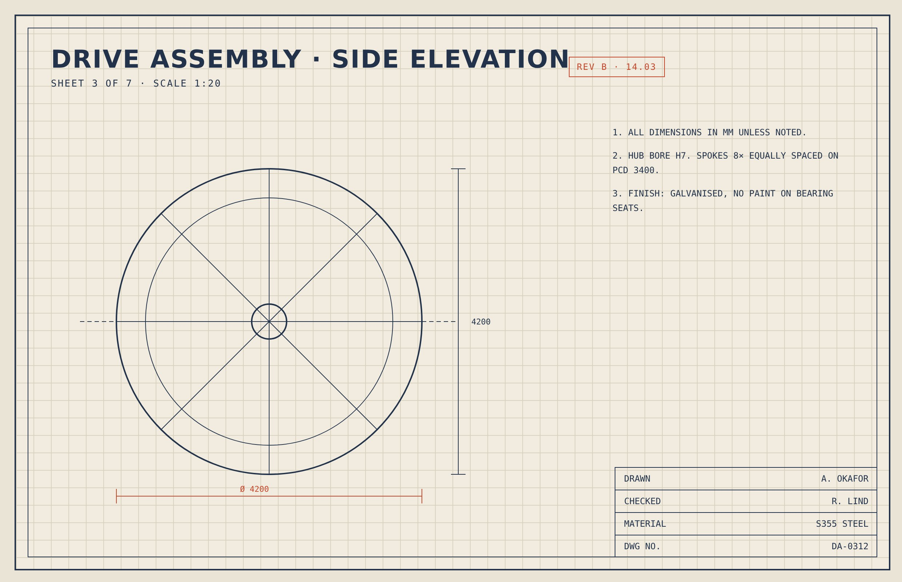

Bay 3 · Lettuce
Default
An engineering drawing's paper, ink and red revision marks, carried over to a site about a growing wheel.
Do these show what you liked?

Do the colours, type and scale feel right?
Title · Barlow Condensed 700 · 37px
Body · IBM Plex Sans Condensed · 17px
Label · IBM Plex Mono · 14px
Note · IBM Plex Mono · 13px/20px
Spacing
Radius
Border
Does each part look right in every state?
Seven bays, one light
Default
Bay 3 · Lettuce
Default
Bay 7 · Empty
Disabled
Default · 24px grid
Default · value always in mark colour
Default
| Diameter | 5.5 m |
| Bays | 7 |
Default
| Diameter | 5.5 m |
| Bays | 7 |
Row hover
Do the parts work together?
Section 2 · The rig
The wheel carries its trays in a slow circle, so every lettuce gets the same light and the same water, and the whole farm fits in one room.
| Diameter | 5.5 m |
| Trays | 8 per bay |
| Bays | 7 |
Does the movement suit the style?
Does each rule fit the subject?
| From the references | From the subject | Rule |
|---|---|---|
| Red-orange only for revisions and dimensions | Rig dimensions from the engineering drawings | Red-orange marks only measured values and actions; everything else is navy |
| Dimension lines with end ticks | The 5.5 m wheel diameter | Figures carry their real measurement as a red dimension line under them |
| Hairline-ruled title block rows | The rig's specification | Specs read as ruled rows: label left in mono, value right |
| Numbered general notes | Growing conditions per bay | Facts about the rig are numbered notes, not bullet points |
| 24px square grid | The drawing scale | Layout snaps to the 24px grid; the grid shows only on the sheet surface |